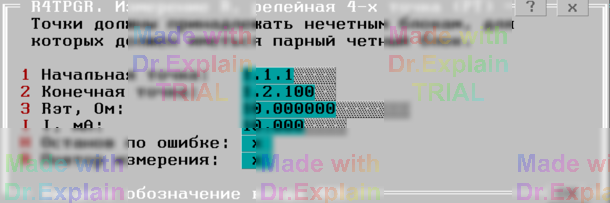

4.1 R4TPGR. Измерение R релейная 4‑х точка (РТ)
Утилита определяет погрешность измерения сопротивления командой РТ. Команда использует ПИТ и вольтметр. Предоставляется меню (см. рисунок 1).

Параметры меню
- «Rэт, Ом» — величина эталонного сопротивления, выставляемая в магазине эталонных сопротивлений.
- «I, мА» — программно задаваемый ток на ПИТ4.
- «Начальная точка» и «Конечная точка» — входы АСК на нечетном (и соответствующем четном) БК для подключения выводов магазина эталонных сопротивлений.
Подключите магазин эталонных сопротивлений к заданным точкам. Например, заданы точки 1 и 2 с адресами 1.1.1 и 1.1.100:
- первый вывод магазина — к точкам 1.1.1 и 1.2.1;
- второй вывод — к точкам 1.1.100 и 1.2.100.
После ввода параметров нажмите Enter.
Автоматически выполняются следующие действия
- Начальная точка подключается к шине A1 на нечетном БК и к шине A2 на четном БК.
- Конечная точка подключается к шине B1 на нечетном БК и к шине B2 на четном БК.
- Устанавливается режим ПИТ: напряжение 10 В и заданный ток.
- Выход «+» ПИТ подключается к шине A2.
- Выход «−» ПИТ подключается к шине B2.
- Вольтметр настраивается в соответствии с заданными R и I и подключается к шинам A1, B1.
- Проверяется режим стабилизации ПИТ по току.
- Вольтметром производится измерение.
-
В протокол выполнения выводятся сообщения вида:
$TST1 Rд.б=10 Ом+-5.00% Rизм=10.00000 Ом Погр=+0.00% $TST1 Измерений:1 Все норма ПОГРmin=0 ПОГРmax=+0.00%
После завершения предоставляется меню (см. п. 6.3).